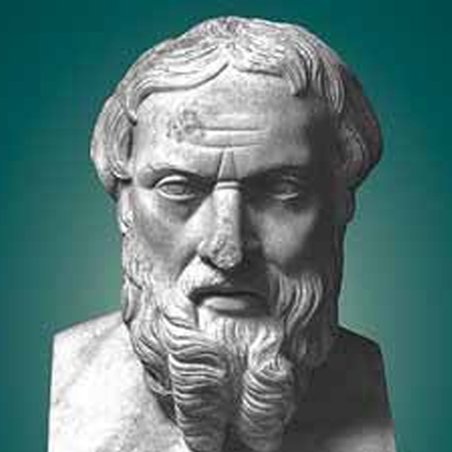
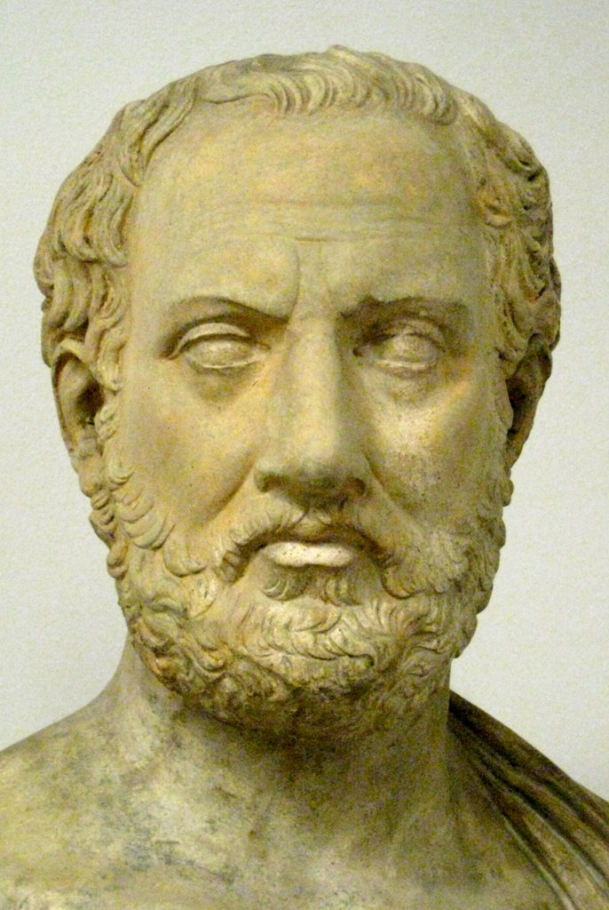

Sources for this Period
Epigraphic Evidence
Important sources from this period derive from inscriptions, known as epigraphic evidence. These include monuments, public buildings, tombstones, and tablets that provide information about laws, taxes, treaties, and achievements of military and political leaders. They also offer insights into religious and social life.
Epigraphic evidence from Athens includes inscribed pottery shards used for ostracisms, revealing important political developments.
Persian Sources — Absence
The Achaemenid Persian Empire was predominantly oral rather than written. While events were remembered and transmitted through storytelling, no written sources from Persians themselves survive.
All narrative written history about Persians came from Greek authors, who focused exclusively on Persian–Greek contact, typically military conflicts. This created inherent anti-Persian bias. Since Greece lay on the empire’s northwestern border, Greek sources covered only nearby events, leaving vast eastern territories undocumented.
Herodotus
Why is Herodotus called 'The Father of History'? — TED-Ed
Video summary
Explains why Herodotus is considered the father of history, his methods, contributions, and limitations as a historical source.
Herodotus (known as the “father of history”) authored the Histories, covering approximately 320 years through 479 BC. His work addressed:
- Persian Empire’s rise, nations, peoples, and customs
- Early Greek state history
- Greek–Persian wars
Information Sources and Reliability Issues
Herodotus obtained most information through oral history. Human memory proves unreliable, and accounts vary between individuals. His principle involved recording everything heard, though he didn’t always accept it.
Much information came from Athenians, particularly the Alcmaeonid family, creating potential bias. During his residence in Athens — at the height of Athenian power — contemporary tensions existed with Sparta and Corinth. Sparta feared Athenian democracy; Corinth felt threatened by Athens’ Aegean expansion.
Documented Bias
Herodotus coloured his Persian Wars history with contemporary events:
- He favoured Athens, presenting them as Greece’s true saviours
- He disparaged Corinth’s Salamis role despite their foremost participation
Criticisms of His Work
He faced criticism for:
- Failing to evaluate evidence systematically
- Inaccuracy
- Bias
Additional weaknesses included:
- Lack of military expertise limited understanding
- Exaggerated troop and ship numbers
- Viewing conflicts through individual ambitions rather than deeper causes
Despite criticisms, his work remains our most valuable Persian War source.
Thucydides

Thucydides provides our chief source for Athenian power growth. He lived during the second half of the fifth century (455–c.404 BC), witnessing Athens’:
- Political, economic, and cultural peak
- Hostility development with Peloponnesian states
- Long, disastrous Peloponnesian War against Sparta and allies
Historical Methodology
Regarded as the first “scientific” historian, Thucydides attempted objectivity and truth-verification. Though he sought to exclude personal feelings, sometimes he could not entirely succeed.
Thucydides believed Athenian imperialism and resulting Spartan fear caused the Peloponnesian War, described as “the greatest disturbance in the history of the Hellenes.” At his work’s beginning, he inserted the pentecontaetia (fifty-year period), tracing Athenian imperial growth from the Persian Wars’ conclusion.
Source Limitations
While excellent for later periods, Thucydides’ material remains sketchy for early Delian League years because he:
- Found historical discovery difficult due to time passage
- Accepted only verifiable evidence
- Addressed only events illustrating his imperialism theme, ignoring others
Nevertheless, he remains our most reliable source for the fifty years following the Persian Wars.
Plutarch

Plutarch, a Boeotian Greek writing in the first century AD under Roman rule, followed conventional biographical form. For each subject, he provided:
- Birth, family, education, and character accounts
- Important and typical career events
- Influence and significance
His biographies, based on numerous now-unavailable sources, usefully complement Herodotus. Without Plutarch, knowledge of certain individuals would be minimal.
However, Plutarch proved insufficiently critical of sources, making his Lives unreliable in places. Relevant biographies for this period include Themistocles, Aristides, Cimon, and Pericles.
Aeschylus
The Persians — Greek Plays — OpenLearn from The Open University
Video summary
Analysis of Aeschylus' play The Persians, the earliest surviving Greek tragedy and a primary source for the Battle of Salamis.
Aeschylus (525–456 BC), the first great Greek tragic dramatist, wrote over seventy plays; only seven survived. His Persae (The Persians), performed before Athenian audiences in 472 BC, uniquely represented historical rather than mythological tragedy, addressing an event occurring only eight years prior.
Aeschylus fought at Marathon (490 BC) and participated in or witnessed the Salamis battle (480 BC), providing our earliest account of that engagement.
Dramatic Constraints
As tragic poet rather than historian, Aeschylus faced conventions:
- Entertainment remained primary; audiences expected dramatic streamlining
- Poets functioned as teachers; Aeschylus conveyed that hubris (arrogant pride) receives severe divine punishment, omitting facts and including inaccuracies to focus this theme
- Events required tragic treatment from Persian perspective
Political Influence
Aeschylus, befriending Themistocles (believed most responsible for Salamis victory), employed the play as political propaganda favouring him, though never mentioning him directly.
- Herodotus, The Histories
- Plutarch, Lives
- Aeschylus, The Persians
- Ostraka
- Persian inscriptions
- Herodotus, The Histories
- Plutarch, Lives
- Aeschylus, The Persians
- Ostraka
- Troezen inscription
- Herodotus, The Histories
- Plutarch, Lives
- Aeschylus, The Persians
- Inscription at Thermopylae
- Serpent column
- Thucydides, The Peloponnesian War
- Plutarch, Lives
- Herodotus, The Histories
- Aristotle, The Athenian Constitution
- Athenian tribute lists
- Thucydides, The Peloponnesian War
- Plutarch, Lives
- Herodotus, The Histories
- Aristotle, The Athenian Constitution
- Athenian decrees (Chalcis, Erythrae)
- Thucydides, The Peloponnesian War
- Plutarch, Lives
- Herodotus, The Histories
- Theopompus
- Ostraka
Aristotle
Aristotle (384–322 BC), a northeastern Greek philosopher, spent years in Athens as Plato’s student and later opened a philosophical school.
The Athenian Constitution
The Athenian Constitution, generally attributed to Aristotle’s student work, divides into two parts:
- Historical account showing constitutional evolution
- Late fourth-century constitution analysis
The work contains material preserved nowhere else, providing either unknown facts or different perspectives on established information, though some material proves poor quality, reflecting fourth-century credulity.
Methodological Notes
The author read widely but unnamed sources, likely using Herodotus, Thucydides, and anti-democratic fifth-century pamphlets. He sometimes followed Aristotle’s general views while disagreeing elsewhere, with occasional factual inaccuracies from insufficient verification.
Related Source
The Constitution of the Athenians (Athenaion Politeia), a twelve-page pro-oligarchic pamphlet appearing around 430 BC, was written by an anonymous author, often called the Old Oligarch. References to democratic changes also appear in Herodotus and Thucydides.